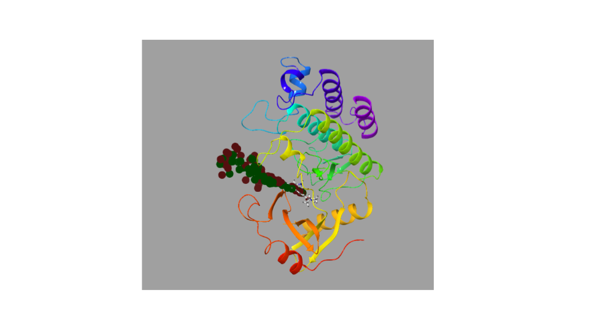
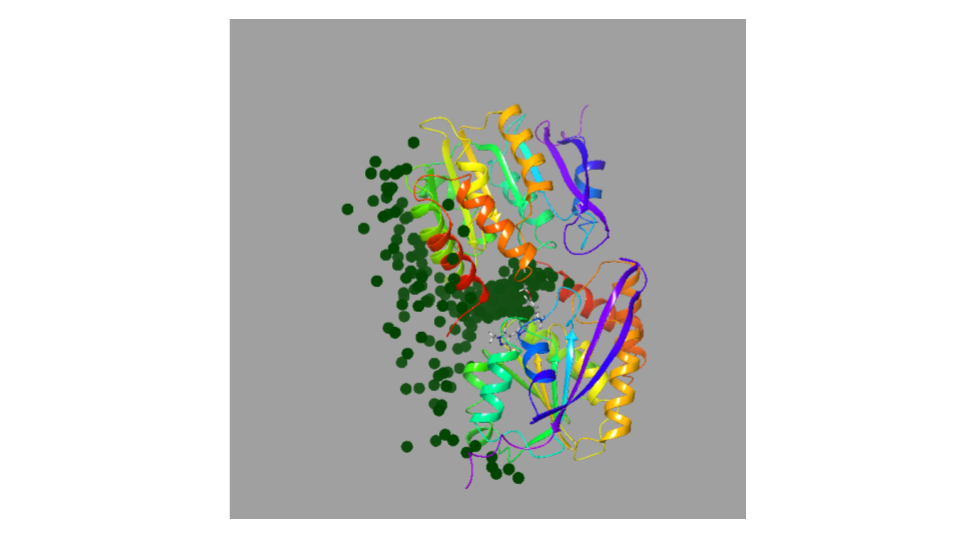

Documentation¶
How does it works:¶
Protein Preparation for Pele:
The input complex will be processed by PPP module checking next features:
- HIS/HIP/HID will be transform into PELE language.
- Capping loops will be neutral
- Constraints will be applied every 10 Calphas on the receptor complex.
- Constraints will be applied on all metals and its coordinates.
- Missing sidechains will be added
- Template residues and non standard aminoacids will be checked
- Other found errors will be outputted to screen for the user to change them manually.
Adaptive Exit:
An adaptive PELE exit simulation will be performed over the docked complex, until 5 trajectories has reached a SASA value bigger than 0.95. Then, the exit path will be clusterize using KMeans algorithm and this will serve as input on the next PELE explortion simulation.
Clusters of two Adaptive exit simulations with different ligands over the same target
- Pele Exploration:
A PELE exploration will be performed with all the previous cluster as different initial postions of the ligand to explore as much transitions as posible between the slowest binding modes. Then, points will be clusterize through a KMeans algorithm.
PELE MC simulation clusters
- MSM Analysis:
Finally, transition matrix will be computed and diagonilize for several subsets of the previous data. Using thermodinamic stadistic on the subset’s eigenvectors, absolute free energies and its standard deviation can be stimated as well as system’s markovianity.
{kind=link}
{kind=link}
Optional Arguments:¶
Overall Arguments:
- –restart restart the simulation from [adaptive, pele, msm]:
- adaptive flag will not performed PPP and lunch adaptive exit simulation with the already processed input pdb.
- pele flag will create adaptive clusters if not done and start pele simulation.
- msm flag will cluster pele exploration simulation and performed MSM analysis.
i.e.1. python -m MSM_PELE.main complex.pbd resname chain –restart adaptive
i.e.2 python -m MSM_PELE.main complex.pbd resname chain –restart pele
i.e.3 python -m MSM_PELE.main complex.pbd resname chain –restart msm
PPP:
- –charge_ter to charge all terminal resiues of the receptor.
i.e. python -m MSM_PELE.main complex.pbd resname chain –charge_ter
- –gaps_ter cap gaps or leave them as connected atoms. i.e. python -m MSM_PELE.main complex.pbd resname chain –gaps_ter
- –forcefield forcefield to use to describe the protein. Options: [OPLS2005, Amber99sb] i.e. python -m MSM_PELE.main complex.pbd resname chain –forcefield Amber99sb
PlopRotTemp :
- –core Specify an atom that will be used as a core for sidechain identification i.e. python -m MSM_PELE.main complex.pbd resname chain –core 2
- –mtor Maximum number of rotamers per sidechain i.e. python -m MSM_PELE.main complex.pbd resname chain –mtor 2
- –n Maximum number of sidechains i.e. python -m MSM_PELE.main complex.pbd resname chain –n 10
- –gridres Rotamers resolution. Every how many degrees the rotamers will be moved in simulation. i.e. python -m MSM_PELE.main complex.pbd resname chain –gridres 40
Adaptive Exit simulation:
- –clust number of clusters after adaptive exit simulation. It must always be smaller than the number of cpu power. i.e. python -m MSM_PELE.main complex.pbd resname chain –clust 70
- –cpus number of cpus to use i.e. python -m MSM_PELE.main complex.pbd resname chain –cpus 200
PELE simulation:
–confile Use your one pele exploration configuration file i.e. python -m MSM_PELE.main complex.pbd resname chain –confile /path/to/myconfile.conf
–native Use pdb snapshot to create an rmsd metric along pele simulation i.e. python -m MSM_PELE.main complex.pbd resname chain –native crystal_struct.pdb
parser.add_argument(“–precision”, action=’store_true’, help=”Use a more agressive control file to achieve better convergence”) 115 parser.add_argument(“–test”, action=’store_true’, help=”Run a fast MSM_PELE test”) 116 parser.add_argument(“–user_center”, “-c”, nargs=’+’, type=float, help=’center of the box’, default=None) 117 parser.add_argument(“–user_radius”, “-r”, type=float, help=”Radius of the box”, default=None)